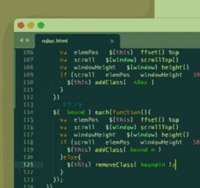
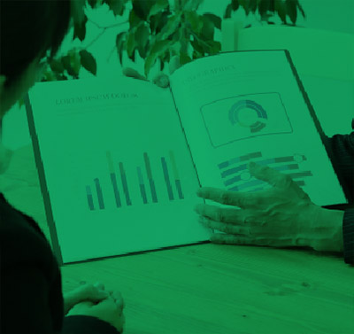
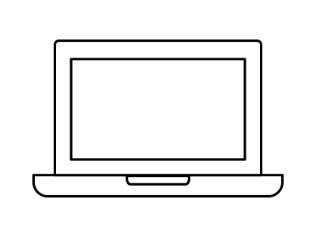
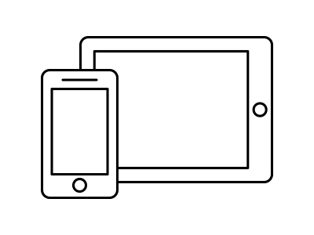

Profile
自己紹介
デザイナーからコーダーになり、現在はフロントエンドエンジニア。
History
経歴
- 高等学校
- 授業でプログラミングの基礎（COBOL）を３年間学ぶ。
事務職を目指して簿記やExcelなどの検定を取得するが、デザイナーに憧れて専門学校へ進学。 - 専門学校
- グラフィックデザインについて２年間学ぶ。
実務経験を積むため学校から紹介されたデザイン事務所でアルバイトを始める。 - デザイナー
- アルバイト先から卒業後も働かないかと声をいただきデザイナーとして入社。
しかしWEB管理を担当していた先輩が突然辞めてしまい、急遽HTMLを覚えることに。 - コーダー
- COBOLの下地があったため３日ほどで簡単なコードなら組めるようになり、
嬉しくてCSSの勉強も開始。
CSSアニメーションの面白さに目覚める。 - エンジニア
- パララックスの案件が増え、JavaScriptの勉強も始める。
フロントエンドをメインで担当。
クライアント側で更新しやすいようにWordPressを使用することが多い。
Skill
技能
HTML／CSS
PHP

JavaScript

WordPress／CMS
Photoshop／Illustrator
XD／Figma
WEBサイト
- レスポンシブデザインで様々な端末に対応
- パララックスやCSSアニメーションで動きをつける
- 完全オリジナルのWordPressテーマを作成
- XD・Figmaなどのデザインを元に構築
- GitHubでのデータ共有
その他
- Photoshop・Illustratorでの画像加工
- Excelでの表計算およびグラフ作成
- PDF・Word・PowerPointなどの基本操作
- Evernote・Slack・Messenger・Talknote・Chatworkなどの基本操作


Responsive
レスポンシブ
PC・スマホだけでなくタブレットや大型モニターなど、あらゆる画面に対応。
ウィンドウのサイズに応じてレイアウトを自動調整します。